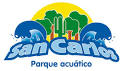
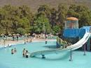

San Carlos
San Carlos
Amatitlanes
Amatitlanes

'BALNEARIOS'
En esta seccion podran conocer la ubicacion y algunos datos mas de los balnearios mas conocidos y populares de Matamoros, en ejemplo el Balneario de San Carlos es un gran lugar
para salir en familia, no importa, dia y momento, el lugar esta a reventar por lo bueno que esta el sitio, al igual que amatitlanes, cuentan con diversas albercas y demas formas
y oportunidades para divertiser y pasar un dia o varios increibles en familia, son lugares excelentes con precios accecibles para ir con quien desees, para ello ambos cuentan con
un gran sistema de seguridad para que puedas disfrutar al maximo con tu familia los dias en que estes de estancia en estos sitios que han maravillado a bastante gente y que ahora
esperan maravillarte a ti, ven por algo son lugares turisticos y de los mas reprensetativos de la region, ya no hay pretextos solo que te decidas a venir.
'BALNEARIO SAN CARLOS'
Parque Acuático San Carlos se encuentra ubicado en:
Camino a los Limones s/n
Comunidad de San Carlos
Izúcar de Matamoros, Puebla.
Correo electrónico:parque@acuaticosancarlos.com.mx
Facebook:San Carlos Parque Acuatico
Twitter:@ParqueSanCarlos
Teléfonos: (01243) 4325098 / 4325019

'BALNEARIO AMATITLANES'
Balneario amatitlanes Paraiso tropical ubicado en:
Carretera a Cuautla Kilómetro 3.5 Centro 74400 Izúcar de Matamoros, Pue.?
Telefono:01 243 436 0713
